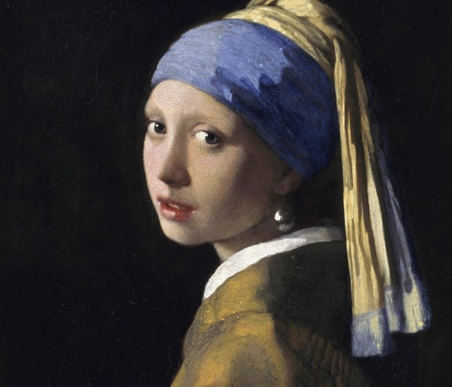

Girl with a Pearl Earring
Johannes Vermeer
1665
The painting is a tronie, the Dutch 17th-century description of a 'head' that was not meant to be a portrait. It depicts a European girl wearing an exotic dress, an oriental turban, and what was thought to be a very large pearl as an earring. In 2014, Dutch astrophysicist Vincent Icke raised doubts about the material of the earring and argued that it looks more like polished tin than pearl on the grounds of the specular reflection, the pear shape and the large size of the earring.
Go to source